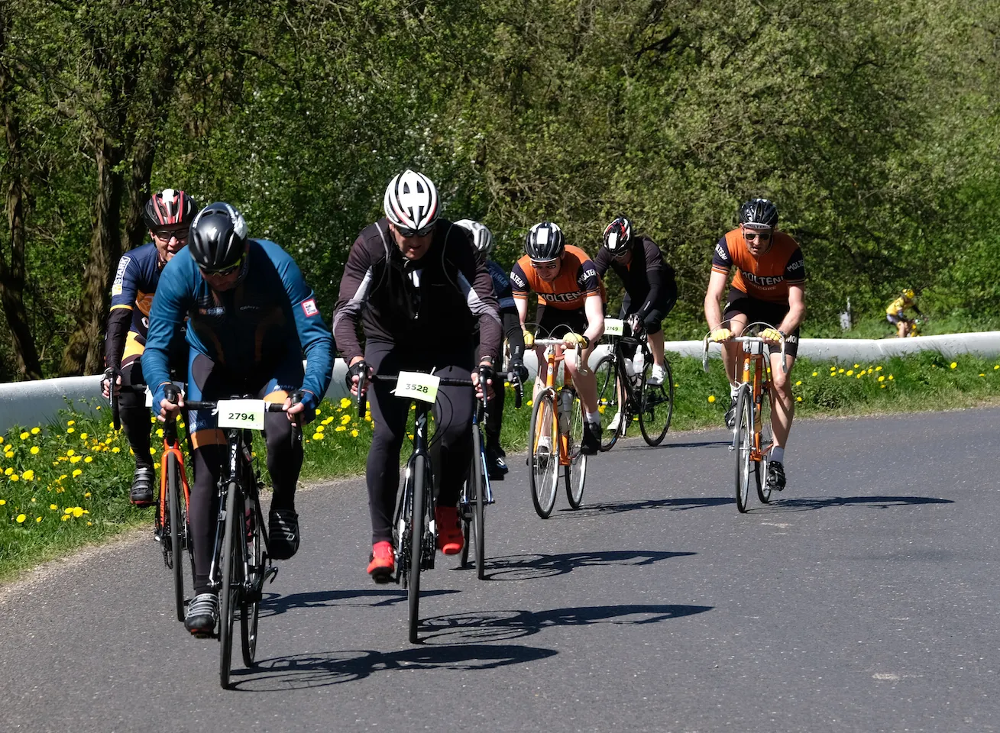
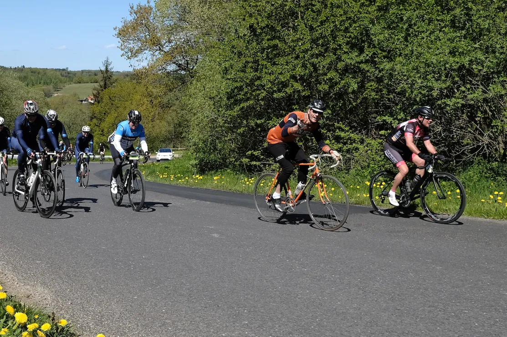

Grimpeur Leegaard vinder Grejsdalsløbet 2019

Squadra Moltenis grimpeur Eigil Leegaard vandt i suveræn stil stålklassen ved Grejsdalsløbet. Kaptajn Niels Bjørnsteen og Løjtnant Kasper Sørensen sled sig smertede til 2. og 3. pladsen.
Planen var klar fra start: Det var Eigils løb – og han skulle beskyttes i mod- og sidevinden. Derfor skulle Kaptajn Bjørnsteen og Løjtnant Sørensen beskytte Eigil de første 100 km. Derefter, når Eigil forhåbentlig var blevet varm, skulle han sætte et afgørende ryk ind på de sidste 3 bakker.
Planen gik perfekt. Kaptajn Bjørnsteen og Løjtnant Sørensen beskytte Eigil ud af Vejle og op af 1. bakke. Men allerede på 2. bakke kunne både Kaptajnen og Løjtnanten se, at det ville blive en lang og ekstrem hård dag: For Eigil var flyvende på bakkerne. Med den letteste lethed trådte han væk fra sine beskyttere – og Løjtnant Sørensen måtte på hårdt arbejde, for at indhente Eigil inden næste bakke.
– Det var sku vildt at se. Eigil drønede op af bakkerne med en lethed, som skulle han lige til bageren efter morgenbrød, siger Løjtnant Kasper Sørensen. Jeg kørte med syre i benene allerede efter 2. bakke. Og Kaptajnen led voldsomt.
Kører væk på Munkebjerg
Selv i mod- og sidevinden, hvor Eigil normalt har sit svage punkt, var han bom stærk, og da feltet nærmede sig Vejle efter den første sløjfe på små 50 km, stod den kort efter på “Golfbakken” (som nedkørsel) og Munkebjerg. Kaptajn Bjørnsteen laver et stykke solidt arbejde frem til og ned af “Golfbakken” – og da Munkebjerg rejser sig, forsvinder grimpeur Eigil op – og væk.
– Eigil bliver ikke væk. Nej, han kører simpelthen væk fra feltet. Kasper og jeg kan overhoved ikke følge med. Vi finder senere ud af, at Eigil havde misforstået vores taktik: Han troede, at når der manglede 100 km, så skulle han sætte et angreb ind, fortæller Kaptajn Bjørnsteen.
Eigil Leegaard fandt et godt og hurtigt felt – og kørte med overbevisende lethed og ikke mindst: han havde troen på sig selv.
– Efter La Fleche Vejllonne, hvor jeg kunne mærke, at jeg kunne rykke kraftigt på bakerne (Eigil vandt den mest prestigefyldte bakkesejr ved La Fleche Vejllonne – nemlig Chr. Wintersvej/Gl. Kongevej), har jeg genfundet troen på, at jeg kan – og at jeg skal køre mere aggressivt på bakkerne, lyder det fra Eigil Leegaard.
Lidende tempokørsel i sidevinden
Efter Eigil Leegaard havde efterladt Kaptajn Bjørnsteen og Løjtnant Sørensen – stod den for de to på lidende tempokørsel i mod- og sidevinden. De to kørte mange (alt for mange) kilometer alene fra gruppe og op til næste gruppe.


– Vinden var sindsyg i år. Og så havde arrangørerne også smidt 4 – 5 ekstra bakker ind, der var i alt 18 kategoriserede bakker – så i år var der hele 1500 højdemeter på de 140 km. Mine ben syrede til allerede på bakke nummer 2, men heldigvis fik jeg det bedre senere i løbet, fortæller Kasper Sørensen.
– Jeg syrede også til på bakke 2. Men jeg kom mig aldrig helt. For mig var det 4,5 timers overlevelse, fortsætter Kaptajn Bjørnsteen.
Sejr og skideballe fra kaptajnen
I mål ventede Eigil, der havde kørt 20 minutter hurtigere end Kaptajn Bjørnsteen og Løjtnant Sørensen. Det blev selvfølgelig til velfortjent ros og anerkendelse, da Bjørnsteen og Sørensen kom ind og så, at Eigil havde vundet stålklassen. Men det blev også til en lille skideballe fra Kaptajnen:
– Jeg har kraftigt pointeret overfor Eigil, at til næste løb, så stiller han sku ikke op i lange uldovertræksbukser og langærmet trøje. Og man har heller ikke stadig en avis på maven, når man kommer i mål. Og … så har jeg også indskærpet overfor ham, at man ikke vinker til fotografer, lyder det fra Kaptajn Bjørnsteen.


Eigil Leegaard 04:33:38 (31,2 km/t)
Niels Bjørnsteen 04:53:49 (29,7 km/t)
Kasper Sørensen 04:53:49 (29,7 km/t)
Foto: Jacob Jalving (geosnapshot.com) og Maria Winther